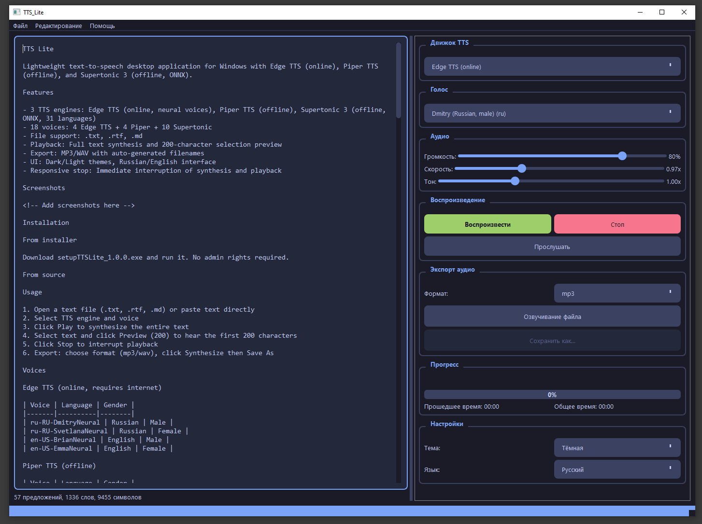

● 3 движка · 18 голосов · офлайн и онлайн · MIT
Лёгкая озвучка текста
Лёгкая озвучка текста
на Windows, Linux и macOS
Вставь текст или открой .txt .rtf .md — выбери голос и нажми Play. Предпросмотр 200 символов, экспорт в MP3/WAV, тёмная тема, русский/английский интерфейс.
PySide6 · LGPLOffline: Piper, SupertonicOnline: Edge TTS177 тестов
Edge TTS отправляет текст в облако Microsoft — при первом выборе спросим согласие. Piper и Supertonic работают полностью офлайн.

▶ Play / ■ StopPreview 200MP3 / WAVТемы · Язык
⚡
Быстро и отзывчиво
Потоковый синтез и мгновенный Stop. Разбивка на предложения, оценка длительности, прогресс-бар.
🔒
Приватно
Логи без полных текстов, защита от path traversal, HTTPS-загрузки моделей с SHA-256.
🧩
Кроссплатформенно
QSettings нативно: реестр Windows, INI на Linux, plist на macOS. Сборка через PyInstaller.
Скачать
Выбери систему. Файлы лежат в Releases — всегда последняя версия. Если ссылка не открылась, зайди в Releases вручную.
Голоса
Edge TTS
| Voice | Язык |
|---|---|
| ru-RU-DmitryNeural | RU муж. |
| ru-RU-SvetlanaNeural | RU жен. |
| en-US-BrianNeural | EN муж. |
| en-US-EmmaNeural | EN жен. |
Piper
| Voice | Язык |
|---|---|
| ru_RU-irina-medium | RU жен. |
| ru_RU-ruslan-medium | RU муж. |
| en_US-lessac-medium | EN муж. |
| en_US-amy-medium | EN жен. |
Supertonic 3
Установка и запуск
TTS_Lite_Windows.zip → распаковать → TTS_Lite.exe
tar -xzf TTS_Lite_Linux.tar.gz && ./TTS_Lite/TTS_Lite
tar -xzf TTS_Lite_macOS.tar.gz && open TTS_Lite.app